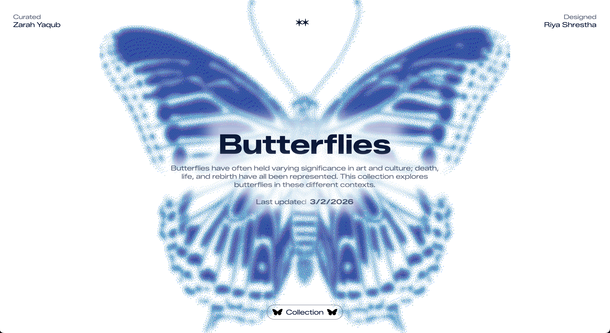
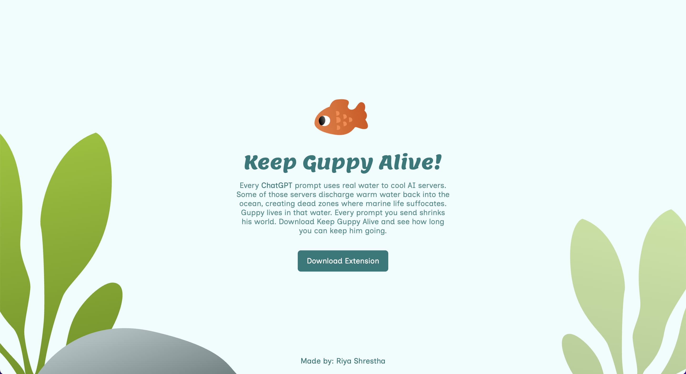

-
#manuscript

Manuscript
This webpage is a depiction of the essay "Neomania" by Anne Burdick. Which is a call out to designers that are addicted to the new and the cool, but they pretend they're doing something more serious and functional.
#manuscript
-
#spread

Spread
A collaborative project with Amanda Gu on the webpage for McGuirk’s “Honeywell, I’m Home!” exploring how companies collect our data hidden in products. The dark, terminal-inspired design reflects the invisible wall and unseen use of our data.
#spread
-
#binding

Binding
This website is a collection of webpages based on essays by Heller, Burdick, and Lupton, themed like newspapers. Newspapers deliver the latest news and trends, mirroring exactly what these essays attack: designers chasing what's current.
#binding
-
#links

Links
This webpage is a themed collection using Are.na as a CMS, with a custom interface built via its API. Based on the board "Butterflies" curated by Zarah Yaqub and me, the design links butterflies to fading memories and perception of the world.
#links
-
#functions

Functions
This is a chrome extension built in HTML, CSS, and JavaScript that visualizes ChatGPT's hidden water footprint through a virtual fish named Guppy. Every prompt drains his bowl and the user's goal is to keep him alive.
#functions